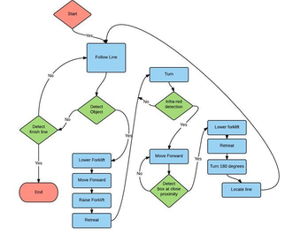

Our original design was a maze filled with objects and obstacles, that the robot could solve, removing/reacting effectively to anything in its path.
Due to encountering many problems, mostly physical, we decided to simplify the game somewhat. The main two problems were the optical sensor position, and the forklift/object shape. The sensor was positioned to the right of the robot, making it very difficult to follow a line to its left. The forklift was also not strong enough to cope with a heavy object (without the object falling off), or without unintentionally dropping a light object due to rough movement when turning.

The algorithm works on an always-try-left principle. At any intersection, the robot will try and check the path to its left. If it finds a path, it will follow it, if it doesn't find the path, it will turn back onto its original route. If it finds blank space in front of it, it will spin 180 degrees and move back along the path the other direction.
After creating the first prototype of the maze, we realised that the robot was going to struggle with a maze that was not consistent. Therefore we had to spend time re-making the tiles to very specific dimensions, with the maze path aligning at perfect right angles throughout the maze.